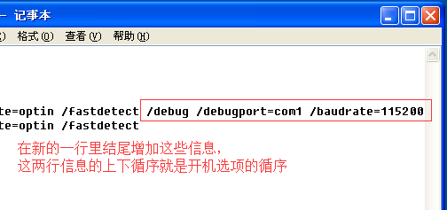

VMWARE的配置
VMWARE软件的安装和操作系统的安装这里不再介绍，假定已经全部安装完毕。
在虚拟机配置页面进行串口配置，如图所示
WINDBG的配置
安装WINDBG时，需要注意的是调试WIN10系统，需要WINDBG的10.0及以上版本才能正常识别。
创建WINDBG程序的快捷方式，然后在 目标 栏处，程序路径的后边附加调试参数，例如
1 | "C:\Program Files\Debuggers\windbg.exe" -b -k com:port=\\.\pipe\com_1,baud=115200,pipe |
WINXP的配置
WINXP中需要对 boot.ini 进行修改，这里提供一种方式。
在 我的电脑 右键，单击选择 属性 栏
选择 高级 选项卡，然后单击 启动和故障恢复 里边的 设置 按钮
在 启动和故障恢复 窗口中单击 编辑 按钮
到这里就打开了 boot.ini 文件，复制 [operating systems] 里边的信息到新的一行
然后在新复制的信息末尾增加调试参数，例如
1 | multi(0)disk(0)rdisk(0)partition(1)\WINDOWS="WinXP" /noexecute=optin /fastdetect /debug /debugport=com1 /baudrate=115200 |

保存 boot.ini 文件并关闭，然后重启操作系统，在开机界面要选择 [启用调试程序] 项
选择完毕后，同步打开具有调试参数的WINDBG快捷方式，至此搭建完成。